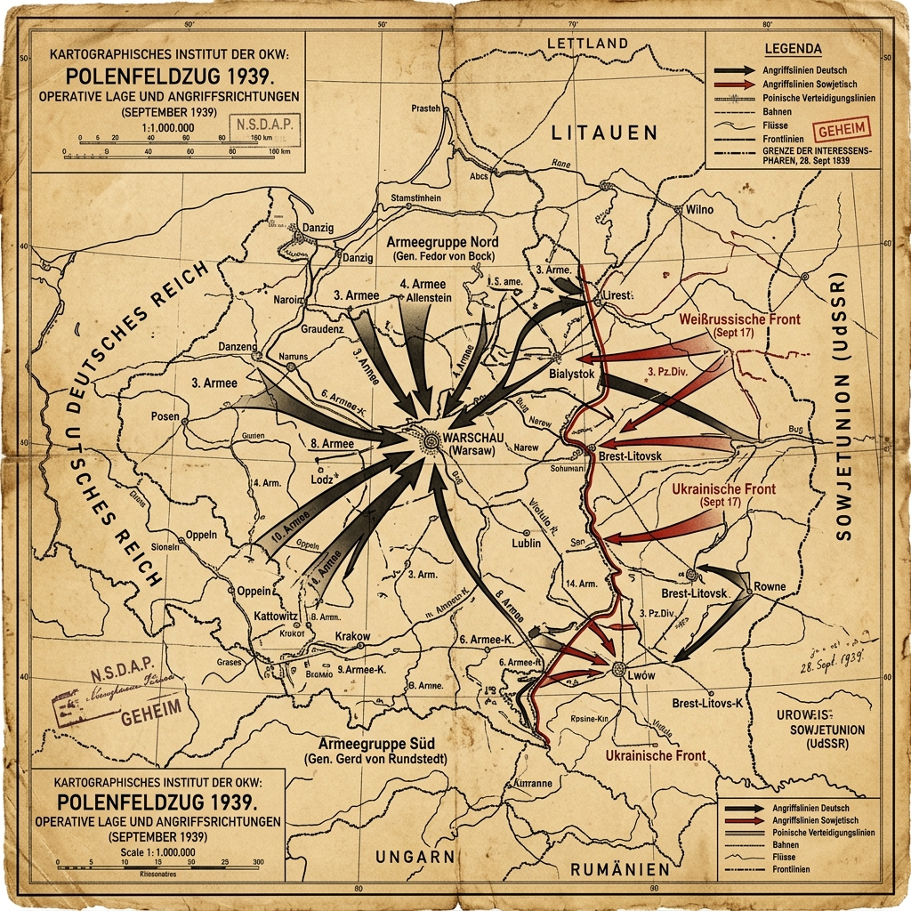

Strategic Context & Geopolitical Buildup
The invasion of Poland was the calculated culmination of Adolf Hitler's long-standing diplomatic and territorial campaign in Eastern Europe. Following the annexations of Austria (the Anschluss) and Czechoslovakia's Sudetenland, Hitler sought to resolve the issue of the 'Polish Corridor'—a strip of land that partitioned East Prussia from the rest of Germany—and reclaim the Free City of Danzig, which was under Polish customs control. Poland, fearing a fate similar to Czechoslovakia, steadfastly refused German diplomatic demands.
The European geopolitical dynamic shifted fundamentally on August 23, 1939, when Nazi Germany and the Soviet Union signed the Molotov-Ribbentrop Pact. This non-aggression treaty shocked the Western democracies. More importantly, it contained a secret protocol that partitioned Eastern Europe into spheres of influence. Poland was divided along the Narew, Vistula, and San rivers. This pact neutralized the threat of a Soviet intervention, allowing Hitler to initiate military planning without fearing a two-front war, while guaranteeing Stalin a significant territorial buffer and time to prepare for an eventual clash.
Military Doctrines & War Plans
The German war plan, codenamed Fall Weiss (Case White), was developed by the Oberkommando der Wehrmacht (OKW). It envisioned a rapid, concentric invasion designed to envelop the Polish armies west of the Vistula River before they could fully mobilize. The plan relied on the coordinated use of armored columns, motorized infantry, and tactical air support to penetrate deep into Polish territory, disrupting logistics, communications, and command infrastructure.
Conversely, the Polish defensive plan, Plan Zachód (Plan West), was deeply flawed. Political pressures forced the Polish High Command to deploy their armies along the lengthy German-Polish border to defend key industrial and agricultural regions. This wide dispersal left them highly vulnerable to encirclement. Furthermore, the Polish forces relied heavily on infantry and horse cavalry, which, although highly motivated and skilled, lacked the mobility and heavy armor required to counter the rapid German advances.
Weapons, Technology, and Logistics
The Polish Campaign showcased the first combat application of the Wehrmacht's combined-arms doctrine, later popularized by Western observers as Blitzkrieg (Lightning War). The German Panzer divisions, equipped with Panzer I, II, III, and IV tanks, bypassed defensive strongpoints to execute deep encirclements. The Luftwaffe played a critical role, using Ju 87 Stuka dive-bombers to perform close air support and precision attacks on Polish infrastructure.
Poland's military technology was outdated but not completely obsolete. They possessed the modern 7TP light tank and the highly effective Wz. 35 anti-tank rifle, which could penetrate German light armor. However, their air force, consisting largely of PZL P.11 fighters, was hopelessly outnumbered and outclassed by the faster German Messerschmitt Bf 109s, although Polish pilots fought with extreme tenacity.
Opening Moves & Initial Clash
To justify the invasion, the SS staged several border incidents, most notably the Gleiwitz incident on August 31, 1939. SS operatives dressed in Polish uniforms seized a German radio station in Gleiwitz and broadcasted an anti-German message. Concentration camp prisoners were killed and left at the scene to serve as 'evidence' of Polish aggression.
On September 1, 1939, at 4:45 AM, the German pre-dreadnought battleship Schleswig-Holstein opened fire on the Polish military depot at Westerplatte in Danzig, signaling the official start of World War II. Simultaneously, the Luftwaffe launched massive bombing raids across Poland, targeting airfields, communication nodes, and cities. Panzer units plunged across the border, quickly slicing through the thin Polish defenses and starting the encirclement of Polish armies in the border regions.
The Combat Narrative & Critical Phases
The invasion unfolded with terrifying speed. Within the first week, German Army Group North under Fedor von Bock and Army Group South under Gerd von Rundstedt had broken through the Polish lines. By September 8, German armored spearheads reached the outskirts of Warsaw, initiating the Siege of Warsaw.
The Polish attempted a major counteroffensive along the Bzura River starting September 9. Commanded by General Tadeusz Kutrzeba, the Battle of the Bzura was the largest engagement of the campaign. The Poles initially surprised the German flank, but the Luftwaffe quickly established absolute air supremacy, launching relentless bombing runs that destroyed Polish communication lines and forced them into a fighting retreat toward Warsaw.
The Soviet Invasion
On September 17, 1939, the Soviet Union launched its own invasion of Poland from the east, deploying over 460,000 Red Army troops. The Soviet government justified this action by claiming that the Polish state had ceased to exist and that they were acting to protect ethnic Ukrainian and Belarusian populations. In reality, they were executing the secret terms of the Molotov-Ribbentrop Pact.
This second front shattered any remaining Polish hopes of establishing a defensive line in the Romanian Bridgehead region. Polish Commander-in-Chief Edward Rydz-Śmigły ordered his troops to withdraw to neutral Romania and Hungary to avoid capture. The Polish armies, caught between two massive invaders, were systematically crushed in detail, though Warsaw resisted courageously until September 27.
Pivot Points & Key Tactical Decisions
A key tactical decision was the Polish deployment along the borders rather than withdrawing behind the natural defensive barriers of the Vistula and San rivers. This political decision, meant to show resolve and defend vital territories, allowed the Wehrmacht to execute its planned envelopment strategy.
Another critical point was the Allied failure to act. Although Great Britain and France declared war on Germany on September 3, they launched no major military offensives in the West. This period, known as the 'Saar Offensive' or the 'Phoney War', allowed the German High Command to focus their entire military weight on crushing Poland without worrying about a Western Front.
The Soldier's Ordeal & Civilian Impact
For the Polish soldier, the campaign was a desperate struggle against overwhelming odds, marked by courage, confusion, and supply failures. Polish cavalry units fought bravely, contrary to later German propaganda myths that claimed they charged tanks with lances. In reality, they functioned as mobile infantry, using anti-tank rifles and light artillery to inflict casualties on German mechanized columns.
The civilian population suffered tremendously. The Luftwaffe targeted civilian refugees fleeing along roads to clog transportation lines and induce panic. The Siege of Warsaw saw indiscriminate shelling and bombing of residential areas. Furthermore, the German invasion saw the immediate deployment of Einsatzgruppen (SS death squads) behind the front lines to systematically identify and execute Polish elites, intellectuals, priests, and Jews, foreshadowing the atrocities of the Holocaust.
The Aftermath & Immediate Consequences
On October 6, 1939, the last organized Polish resistance surrendered at the Battle of Kock. Poland was divided between Nazi Germany and the Soviet Union. Germany annexed western Poland directly into the Reich and placed the central region under the administration of the General Government, headed by Hans Frank. The Soviet Union annexed eastern Poland, incorporating it into the Ukrainian and Belarusian Soviet Republics.
Both occupying powers initiated brutal campaigns of pacification, forced labor, and mass executions. The Soviets executed over 22,000 Polish officers, policemen, and intellectuals in the Katyn massacre in 1940. The Polish government-in-exile was established, first in France and later in London, coordinating a massive underground resistance network (the Home Army) that fought the occupiers throughout the war.
Historical Legacy & Long-term Impact
The invasion of Poland marked the end of the policy of appeasement and plunged the world into a six-year global conflict. It proved the effectiveness of mechanized combined-arms warfare, forcing all major military powers to reform their doctrines and acquire modern armor and aircraft.
The campaign also set a precedent for the war of annihilation in Eastern Europe, where civilian populations were treated as subhumans and subjected to systematic extermination. The geographical positioning of Poland, under Nazi control, made it the central hub for the construction of major death camps, including Auschwitz-Birkenau, Treblinka, and Sobibor, where millions of Jews and others were murdered.
Tactical Map & Theater of Operations
A reconstruction of the operational movements and main advance axes during the opening campaign of the European war:

Figure: Invasion of Poland, September 1939: Showing the dual-pincer advances of German Army Group North and Army Group South converging on Warsaw, alongside the Soviet Red Army's entry from the east on September 17.
Archives, Primary Sources & Further Reading
To explore this campaign further, consult the following primary and secondary resources:
- The National WWII Museum - Invasion of Poland A comprehensive analysis of the diplomatic build-up, military tactics, and human cost of the 1939 campaign.
- Imperial War Museums - How Europe Went to War in 1939 An digital collection featuring photographs, audio logs, and historical summaries from the IWM archives.
- Museum of the Second World War in Gdańsk The official museum at Westerplatte containing primary source documents, operational maps, and diaries of the Polish defense.